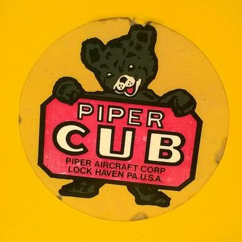

-
Last Updated: April 2022
-

Cameron Fabbri
Data Scientist at BNB
Email: nicolupi.2@.gmail.com
Github
About Me
I am a machine learning researcher at 3M focusing on new applications of generative models. Previously I was a member of the Interactive Robotics and Vision Laboratory (IRVLAB) the University of Minnesota under the supervision of Junaed Sattar.
Research Interests
My main research interests lie within computer vision and deep learning, specifically for generative models. More can be seen on my projects page.Publications and Technical Reports
Cameron Fabbri, MD Jahidul Islam, Junaed Sattar
Enhancing Underwater Imagery using Generative Adversarial Networks
International Conference on Robitics and Automation (ICRA), 2018
[paper]
[github]